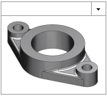
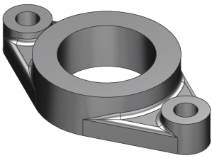
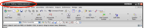
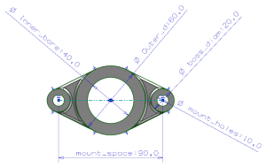
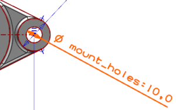
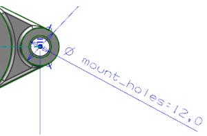
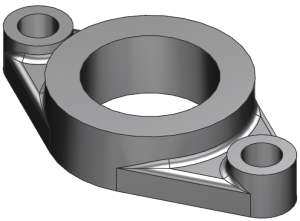

编辑部件模型
在部件模型中，您将把安装孔的大小由10 mm 更改为12 mm，然后查看与之关联的图纸。
-
点击资源条上的历史记录
 然后点击相应的缩略图以打开您的轴承座部件文件副本—XXX_bearing_mount。
然后点击相应的缩略图以打开您的轴承座部件文件副本—XXX_bearing_mount。

-
确保您正处于建模应用模块。

-
双击部件导航器中的草图特征。

-
双击10 mm 的安装孔直径尺寸。

-
键入12并回车。

因为草图中的两个孔使用了等半径几何约束，所以您编辑该尺寸后，两个孔都将发生变化。
-
右击图形窗口背景并选择完成草图。
-
右击部件导航器中的草图特征并选择隐藏。
-
按下 Ctrl+S 以保存文件。
